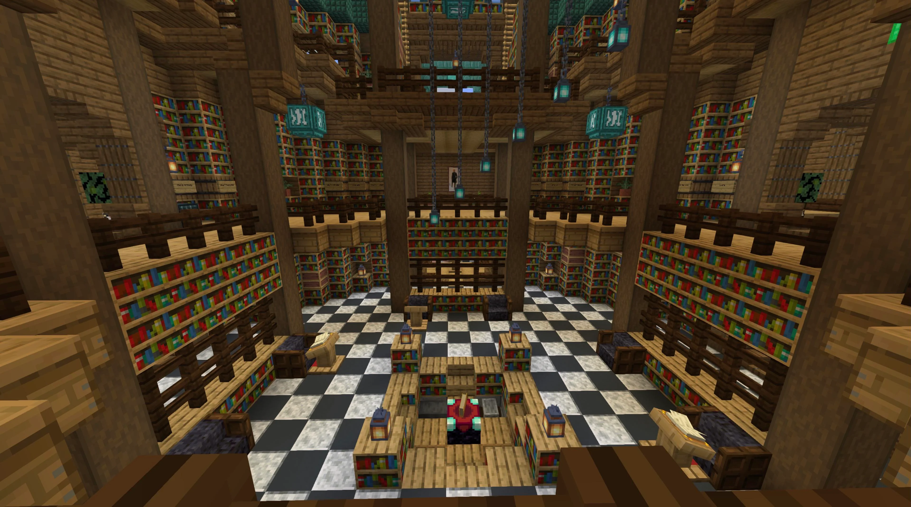
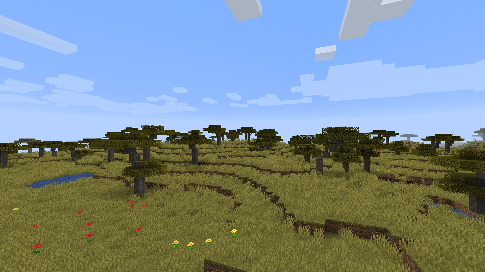

Um dia desses, dentro de um livro da biblioteca da escola, eu descobri um manual do mine e estava falando sobre a estrutura perdida, escondido por riquezas e historias. Nessa carta, a autora deixa algumas pistas para encontrar essa estrutura e eu decidi segui-las!

Você começa sua jornada na savana , .
na sua casa, você estuda a histórica de de uma estrutura inpirado na Atlanta. Na carta, uma das pistas indica que para localizar a entrada para a estrutura perdida você deve procurar a próxima pista em um dos pontos mais altos da savana. Por qual você começa?
No topo do Pico da savana, você encontra uma antiga inscrição apontando que a próxima pista está localizada no oceano.

Você decide que a aventura é grande demais e volta para casa, mas sempre se pergunta o que teria encontrado.
Nas igrejas de Olinda, você descobre um mapa antigo escondido atrás de um altar, apontando que a próxima pista está no Amazonas.
Explorando as praias, você encontra uma caverna escondida, mas ela leva a um beco sem saída.
No Amazonas, a busca pela cidade perdida se intensifica. Você se depara com um rio bifurcado.
De volta às igrejas, você finalmente encontra o mapa antigo. Agora, para o Amazonas!
O rio à esquerda leva você a uma cachoeira escondida com inscrições antigas que revelam a entrada da cidade perdida.
O rio à direita termina em uma área pantanosa. Apesar de belas vistas, não há sinais da cidade perdida aqui.

Dentro da cidade perdida, você descobre tesouros inimagináveis e decide se dedicar a estudar e preservar este lugar
Retornando e escolhendo o rio à esquerda, você finalmente encontra a cachoeira escondida e as inscrições que levam à cidade perdida.